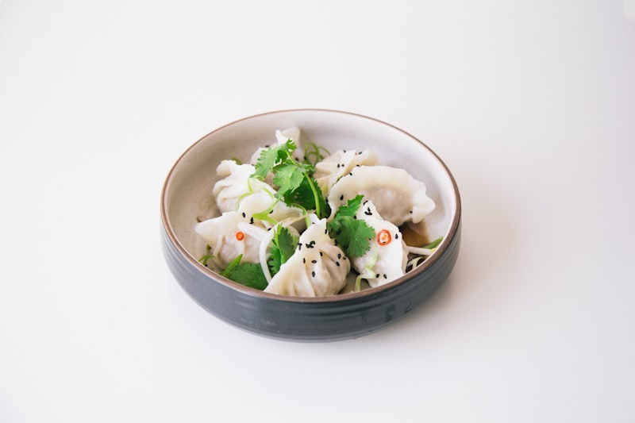

Contemporary Flavors in an Intimate Setting
A curated menu that balances artistic raw bar innovation with bold, high-heat Chinese wok craftsmanship.

The Cherry Blossom Roll
Spicy yellowfin tuna, lump crabmeat, and avocado wrapped inside, adorned with handcrafted Scottish salmon rosettes, micro cilantro, and sweet yuzu glaze.

Honey Glazed Walnut Prawns
Crispy tempura-crusted jumbo prawns tossed in a silky, sweet honey cream reduction, garnished with candied caramelized walnuts and steamed broccoli.

112 Deluxe Sushi Sampler
A full Dragon Roll paired with 6 pieces of chef-selected nigiri and 8 pieces of pristine sashimi (salmon, tuna, yellowtail, and white fish).

Boutique Energy on South Tryon
Whether you're stopping by for a brisk corporate power lunch, meeting colleagues for an after-work signature cocktail, or enjoying an intimate date night before a show at the Belk Theater, Room 112 offers an atmosphere that is both cosmopolitan and deeply welcoming.
Enjoy our extensive selection of dim sum starters, crispy rock shrimp tempura, wok-charred noodles, and premium Japanese sakes.
The Room 112 Philosophy
Precision, hospitality, and contemporary Asian design.
Heart of Uptown
Situated right at 112 S Tryon St next to Trade & Tryon square, accessible easily from the Overstreet Mall and Uptown light rail stations.
Artisanal Knife Craft
Our sushi chefs slice pristine sashimi daily, balancing delicate fish with house-simmered sauces, torched unagi, and crisp tempura elements.
Executive Corporate Trays
Impress your business partners with customized 36-piece and 50-piece sushi banquet platters delivered promptly to your Uptown office.